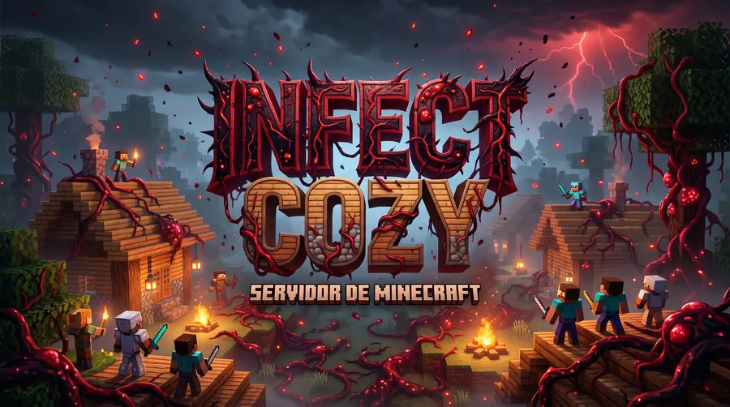

Frontend
Interfaces con React, Next.js y Astro que se ven bien en cualquier pantalla.
Desarrollador Web Full Stack | Cali, Colombia
Creo aplicaciones web modernas con JavaScript y TypeScript: desde la interfaz que ve el usuario hasta la API y la base de datos que la sostienen.

Interfaces con React, Next.js y Astro que se ven bien en cualquier pantalla.
APIs con Node.js, Express y NestJS, seguras y listas para crecer.
Modelado de datos en PostgreSQL y MySQL usando TypeORM.

Modpack de terror para Minecraft con su propia página de descargas, novedades y guía de juego.
Sitio de tres páginas maquetado con Bootstrap a partir de un diseño de UI.